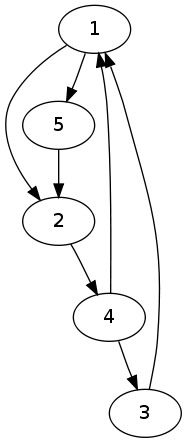
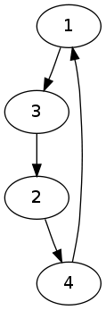
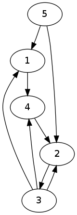
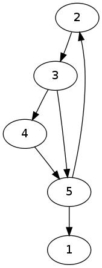
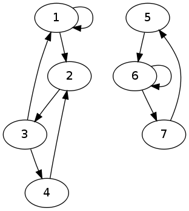
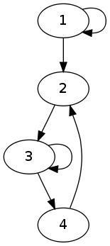

Structure du web, graphes, matrices et PageRank
L'objectif est de mettre en pratique ce qui a été vu en cours
concernant la structure graphique du Web et l'évaluation de
l'importance des pages web.
Toutes les manipulations se feront avec R, sous Linux.
On reprend les exercices vus en cours sur de petits graphes. On
considère les graphes ci-dessous, censés représenter de (très) petits
morceaux du web.
| (a) | (b) | (c) | (d) | (e) | (f) |
|---|
|  |
 |
 |
 |
 |
 |
Du crawling à la matrice d'adjacence
Pour construire la matrice d'adjacence, on part du résultat d'un
crawling. Celui-ci fournit une liste de liens pour les pages
qu'il a parcouru. Pour la repérer et éviter de travailler directement
avec des urls, chaque page est numérotée. On suppose dans cet exercice
que l'on dispose :
- du nombre de pages différentes parcourues ;
- d'une liste de liens sous la forme d'une liste R ;
- d'un vecteur d'urls associant chaque numéro de page à son url.
Pour la graphe (a) ci-dessus, ces trois informations sont :
- 5
- list (c (1, 2), c (1, 5), c (2, 4), c (3, 1), c (4, 3), c (4, 1), c (5, 2))
- quelque chose qui ressemblerait à : c
("http://x.y.z/a.html", "http://x.y.z/b.html",
"http://x.y.z/toto/c.html", "http://x.y.z/titi/toto/d.html",
"http://x.y.z/e.html")
À faire, à partir de ces trois informations :
- Écrire une fonction en R qui calcule le nombre de liens en entrée
de chacun des nœuds.
- Écrire une fonction en R qui calcule le nombre de liens en sortie
de chacun des nœuds.
- Écrire une fonction R qui retourne la liste des puits.
- Écrire une fonction R qui retourne la liste des pages non pointées
par une autre page.
- Écrire une fonction en R qui construit une matrice d'adjacence et
la renvoit.
Graphes et matrices
Structure d'un graphe
- Pour chacun de ces graphes, construire sa matrice d'adjacence.
- Écrire une fonction R qui calcule le vecteur propre associé à la
valeur propre dominante (1 pour une matrice stochastique), selon
l'algorithme vu en cours
(Power
iteration en anglais).
- Appliquer cette fonction sur chaque des graphes ci-dessus, et
analyser le résultat.
- En R, la fonction eigen (matrice) calcule les valeurs
et vecteurs propres d'une matrice. Appliquez-la à ces graphes et
comparez le résultat que vous obtenez avec le résultat obtenu
précédemment par la Power iteration.
Marche aléatoire sur un graphe
- Écrire une fonction R à laquelle on fournit :
- une matrice de transition,
- une distribution de probabilité initiale sur les nœuds
du graphe
- et un nombre de pas
et renvoie la probabilité d'occuper chacun des nœuds après avoir
effectué ce nombre de pas dans le graphe, avec un choix aléatoire de
l'arc à suivre à chaque pas.
- Appliquer cette fonction aux graphes ci-dessus en prenant différentes
distributions de probabilités initiales et en effectuant 100 pas ;
que constatez-vous ?
Importance des pages d'un graphe
- Écrire une fonction R qui prend une matrice d'adjacence en
entrée et retourne le PageRank de chaque nœud.
- L'appliquer aux graphes ci-dessus. Pour le graphe (a), on
trouve
c (.245, .248, .132, .241, .134)